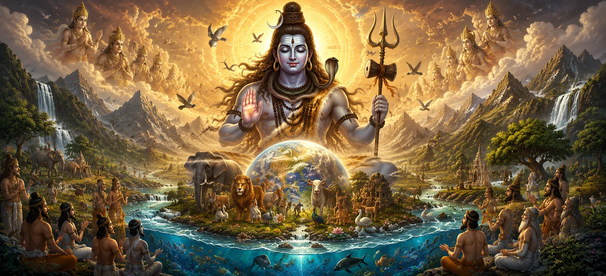

After hearing about the mysteries of Prakriti and Purusha, the sages reflected upon everything they had learned throughout Srishti Khanda. They had heard of creation, the worlds, living beings, Dharma, sacred places, cosmic cycles, and the eternal principles underlying existence. Yet they now wished to know one final truth: How does creation continue to exist in harmony, and what sustains it through the passage of endless ages? The Shiva Purana reveals that the entire universe is upheld by the boundless grace of Lord Shiva. Creation does not endure merely through natural laws or cosmic mechanisms. Behind every movement, every life, and every cycle stands the compassionate blessing of the Supreme Lord, who protects, guides, and sustains all beings.
The sages were taught that Lord Shiva is not only the source of creation but also its eternal protector. His blessing flows through every aspect of existence, maintaining order, supporting Dharma, and providing opportunities for spiritual growth. Even during times of difficulty and decline, His presence remains unchanged. This concluding chapter of Srishti Khanda celebrates the divine compassion that permeates all creation. It teaches that every being, from the highest celestial deity to the smallest creature, exists under the shelter of Lord Shiva's grace. By recognizing this truth, one develops faith, gratitude, and devotion toward the Supreme Lord.
The sages learned that Lord Shiva watches over all creation with boundless compassion. Though the universe operates according to divine laws, those laws themselves function under His supreme authority. Nothing exists outside His awareness or beyond His care. From the movement of celestial bodies to the lives of ordinary beings, everything is sustained by His unseen guidance. His protection is not limited to a particular realm or species but extends equally to all forms of life.
One of Shiva's greatest blessings upon creation is the establishment of Dharma. Through Dharma, beings are given guidance to live meaningful lives, cultivate virtue, and progress toward spiritual realization. The sages understood that Dharma is not merely a set of rules. It is a divine gift that helps maintain harmony within individuals, society, and the universe itself.
Lord Shiva's grace extends to every living being regardless of status, strength, or knowledge. The highest gods, the wisest sages, ordinary humans, animals, and even the smallest creatures all exist beneath the shelter of His compassion. The Shiva Purana teaches that the Lord never abandons creation. Even when beings forget Him, His mercy continues to guide them toward opportunities for growth, learning, and eventual liberation.
The cycles of creation, preservation, and dissolution described throughout Srishti Khanda are not random events. They unfold according to the divine wisdom of Lord Shiva. Through His blessing, each cycle serves a purpose in the cosmic order. Creation provides opportunities for experience and growth. Preservation allows Dharma to flourish. Dissolution prepares the way for renewal. Thus every phase of existence reflects the compassionate intention of the Supreme Lord.
The sages were taught that among all blessings bestowed by Lord Shiva, devotion is one of the greatest. Wealth, power, and knowledge may come and go, but sincere devotion creates an eternal bond between the soul and the Supreme Lord. Through devotion, even ordinary beings can experience divine grace. A heart filled with faith becomes a sacred place where the presence of Lord Shiva is constantly felt.
Although the ages change and civilizations rise and fall, Lord Shiva remains eternally present. In times of righteousness He inspires virtue, and in times of decline He guides beings back toward the path of truth. The sages understood that no age is devoid of divine grace. The Lord continually provides opportunities for spiritual awakening, ensuring that the path to liberation remains open for all who sincerely seek Him.
Filled with reverence, the sages praised Lord Shiva as the creator, protector, and benefactor of all existence. They acknowledged that every blessing within creation ultimately flows from Him and that all beings remain dependent upon His grace. Their hearts overflowed with gratitude as they reflected upon the vastness of creation and the compassion that sustains it. Through praise and devotion, they expressed their realization of the Lord's boundless greatness.
Thus concluded the sacred teachings of Srishti Khanda. Beginning with the mystery of creation and ending with the eternal blessing of Lord Shiva, the sages received a complete vision of how the universe arises, functions, and is sustained through divine grace. They understood that all creation, from the highest heavens to the smallest forms of life, exists within the protective embrace of the Supreme Lord. With this realization, they became established in faith, wisdom, and devotion, ready to receive the further sacred teachings of the Shiva Purana.
"Creation arises through His will, endures through His grace, and finds its refuge in His eternal presence. Blessed indeed is the soul that remembers Lord Shiva in every age and every circumstance."
Srishti Khanda concludes with the eternal blessing of Lord Shiva upon all creation. Continue your sacred journey into the next Samhita, where the countless manifestations, divine forms, incarnations, and cosmic glories of Lord Shiva are revealed in greater depth.